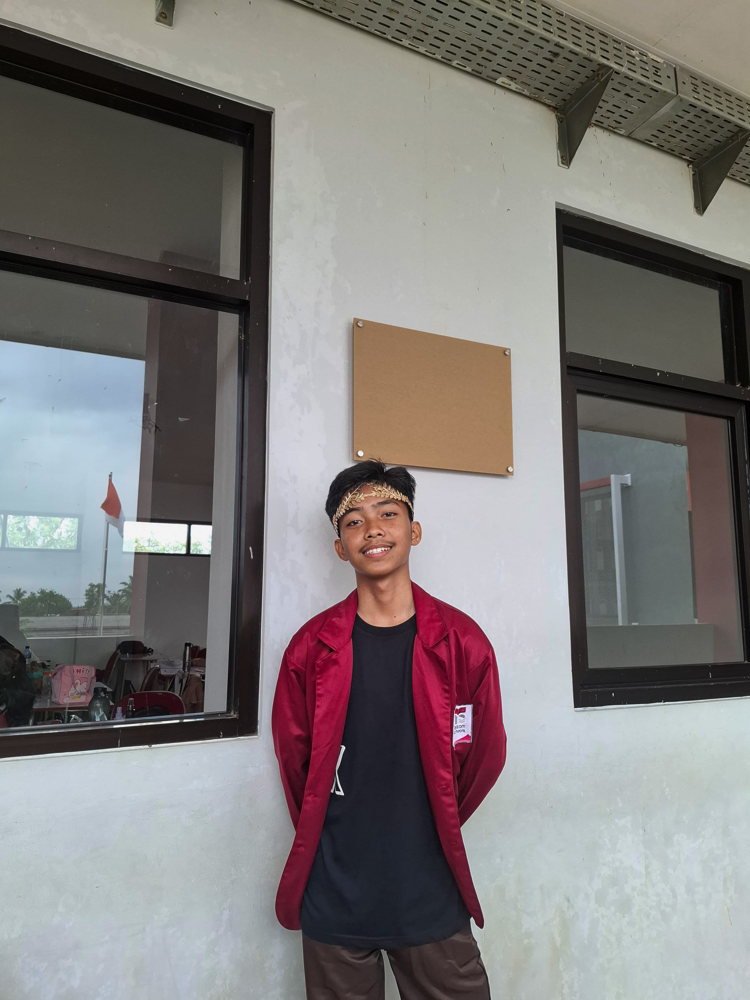

Perkenalkan
Halo semuanya! Perkenalkan, nama saya Syamil Cholid Atsani. Saya adalah seorang pelajar dari SMK Telkom Lampung, saat ini duduk di bangku kelas 12 dan mengambil jurusan yang berfokus pada dunia teknologi, khususnya di bidang Rekayasa Perangkat Lunak (RPL). Sejak kecil, saya memiliki ketertarikan yang besar terhadap komputer dan segala hal yang berhubungan dengan teknologi digital. Hal ini mendorong saya untuk terus belajar, mengeksplorasi, dan memperdalam kemampuan saya dalam pemrograman, desain web, serta pengembangan aplikasi. Bagi saya, belajar tidak hanya terjadi di dalam kelas. Saya senang mencari pengalaman baru dari berbagai sumber, baik dari internet, komunitas, maupun teman-teman seperjuangan. Saya percaya bahwa teknologi bisa menjadi alat yang sangat kuat untuk menciptakan perubahan positif, dan saya ingin menjadi bagian dari generasi yang membawa perubahan tersebut.
Saya Itu
Saya lahir dan besar di Pringsewu, sebuah kota kecil yang penuh ketenangan namun menyimpan semangat besar. Saat ini saya berusia 17 tahun, dan sedang berada di fase hidup yang penuh tantangan, semangat, dan eksplorasi. Di SMK Telkom Lampung, saya mendapatkan banyak kesempatan untuk belajar hal baru, mulai dari logika pemrograman, membuat proyek digital, hingga bekerja sama dalam tim untuk menyelesaikan berbagai tantangan. Di luar kegiatan belajar, saya juga aktif mengikuti berbagai organisasi dan ekstrakurikuler yang mendukung pengembangan diri, seperti IT Club Programming, di mana saya bisa menyalurkan minat saya dan bertukar ide dengan teman-teman yang satu visi. Saya senang mencoba membuat website sederhana, memahami alur backend, serta bereksperimen dengan berbagai tools seperti HTML, CSS, JavaScript, hingga PHP. Saya percaya bahwa setiap orang punya potensi besar di dalam dirinya. Maka dari itu, saya terus berusaha untuk menjadi pribadi yang tidak hanya bisa menguasai teknologi, tapi juga bisa membawa dampak baik untuk sekitar. Mimpi saya sederhana: bisa membuat aplikasi atau sistem yang bisa membantu kehidupan banyak orang, dan terus berkembang menjadi versi terbaik dari diri saya sendiri.

Kontak: +6282294451306